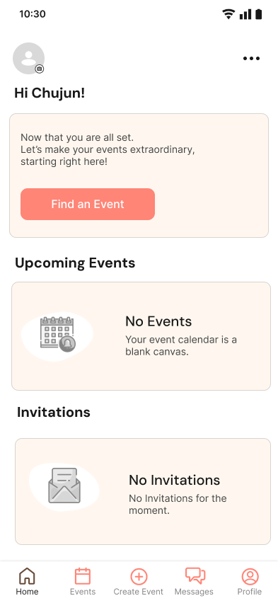
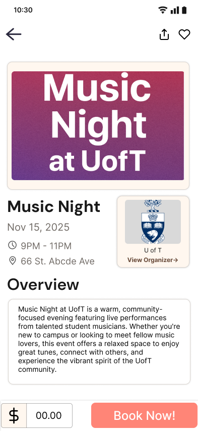
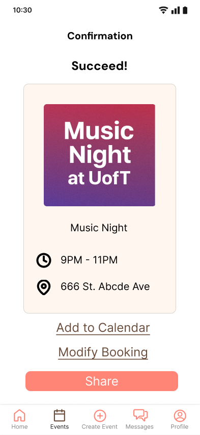

eventjoy-1.png
eventjoy-2.png
eventjoy-3.pngEVENT & SOCIAL APP
EventJoy — local events for newcomers
A mobile app that helps newly-landed international students find local events they can actually trust — clear organizer info, honest event details, and a sense of who else is going, so attending alone feels less intimidating.
MY ROLE
View case study →
Full team project across research, prototyping, and testing. I authored the background research individually, ran part of the interviews and usability testing, and built the final high-fidelity mockup on my own.